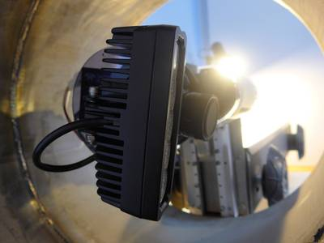
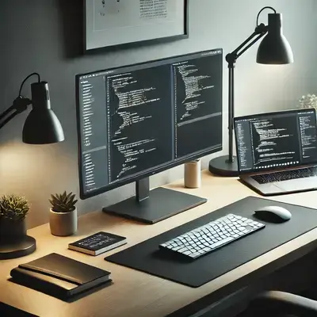

Digital Agriculture

I optimise agricultural operations using remote sensing, robotics and analytics. My work at CSIRO included leading teams performing hyperspectral imaging of crops, LiDAR scanning for biomass estimation, helicopter based IR imaging of crops for comparing transpiration efficiency, sensor based irrigation management, and working with semi-autonomous field robots for crop monitoring. I’ve conducted on-site engineering in: PC2 research labs, automated greenhouses, and research farms. I have traveled to many institutions in Australia, Mexico & the USA to see best practices, and digital innovations, from a range of growers.
In 2018, a project I was managing received the CSIRO “Directors Award: Breakthrough Innovation”. For advancing the capabilities of a semi-autonomous field robot that performed LiDAR scanning of crops.
Robotics
Draw on hands-on leadership of robotics projects, including pipe crawler systems for weld inspection. Whether you need guidance in sensor integration, embedded systems, or novel hardware development, I help bring robotic solutions from concept to operational reality.
Image Analysis & Computer Vision

Harness extensive expertise in OpenCV, 3D scanning, LiDAR, Structure from motion, hyperspectral imaging, volumetric CT scan processing, and AI. With a track record of transforming raw imaging data into actionable insights for weld inspection, rail inspection, pipe inspection, agriculture, mining, and beyond, I ensure robust, reliable performance at scale.
NDT (Non-Destructive Testing)

I have developed, and worked on, a broad variety NDT systems. Including inductive sensors for rail flaw detection, ultrasonics, structured light scanning, LiDAR, and hyperspectral imaging. My expertise spans a diverse array of sensors and techniques for detecting material defects across various industries.
Hardware Prototyping

I provide end-to-end prototyping, including PCB design, CNC routing, 3D printing, and embedded systems development. My experience includes designing and fabricating robotic systems, small-to-medium DC circuits, and sensor-integrated hardware for industrial and scientific applications.
Scientific Software and Modelling

(Python / C++ / CUDA / C# / java)
Take advantage of my extensive experience in high-performance computing (HPC), CUDA optimisation, and software development across Python, C++, C# and Java. I specialise in optimised algorithms for large datasets, numerical simulations, and advanced visualisation, ensuring mathematical rigor and efficient code execution.
AI, Predictive Modeling & Classifier Development

I have a strong background in machine learning, including neural networks, classical ML (SVM, kNN, random forests), and deep learning frameworks such as PyTorch. My PhD research focused on predicting human emotional states from physiological signals using AI. I’ve applied predictive modelling in fields ranging from mineral resource estimation to agricultural modeling, in top institutions such as CSIRO and the Australian National University.
Mathematical Optimisation

Maximise efficiency and reduce operational costs through strategic optimisation. I specialize in tailoring algorithms that solve complex placement, scheduling, and resource allocation problems—underpinned by a robust background in numerical methods and HPC.
DSP (Digital Signal Processing)

Draw on my extensive experience in signal acquisition and analysis acquired during my PHD and further work at various engineering firms and CSIRO, I am fairly familiar with processing the following signals: EKG, galvanic skin response, respiratory data, surface electromyography (sEMG), blood volume pole, Eddy Current Testing (ECT), capacitive sensors, accelerometers and MPU units, weather station data, and a large assortment of analogue devices.
Quality Assurance & Code Reviews
I provide comprehensive, independent code audits to enhance software reliability, maintainability, and scalability. With expertise in C++, Python, Java, and C#, I identify defects, optimise performance, and ensure adherence to best practices. I can also provide software asset evaluations for corporate acquisition purposes.
CAD/CAM Services, Including 3D Printing

I provide CAD and CAM services for rapid prototyping, product development, and precision manufacturing. I am experienced in Autodesk Fusion 360, OpenSCAD, and KiCad, with practical expertise in 3D printing, CNC machining, and automated design workflows.
Affective Computing and Sentiment Analysis

With a PhD in Affective Computing and signal processing, I specialise in emotion and sentiment detection using AI. I can also perform natural language processing tasks and conduct sentiment analysis studies.
I offer a Product Sentiment Discovery Package, a structured approach to understanding customer perceptions by combining user persona modelling, social media sentiment analysis, and consumer trust metrics, helping businesses proactively manage brand perception and customer experience.